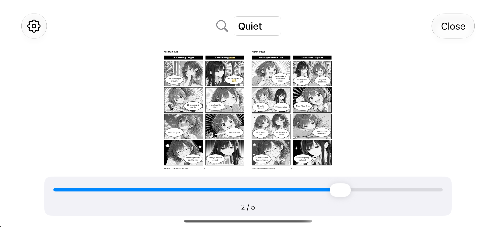

Il problema
I PDF da destra a sinistra possono mostrare pagine o scorrimento nell’ordine sbagliato.
Un lettore per PDF a doppia pagina, manga e libri
Mihiraki: PDF Doppia Pagina è un lettore PDF semplice progettato per libri, fumetti, manga e documenti su iPhone e iPad. Rileva il layout e il senso di lettura del PDF e ti permette di passare fluidamente dalla pagina singola alla vista a doppia pagina.

I lettori PDF standard non sempre mostrano libri rilegati a destra o PDF a doppia pagina nel modo atteso. Mihiraki legge le impostazioni del documento e dispone le pagine nel flusso naturale di lettura.
I PDF da destra a sinistra possono mostrare pagine o scorrimento nell’ordine sbagliato.
L’app rileva senso di lettura e layout, organizzando le doppie pagine in modo naturale.
Zoom, ricerca, rendering ad alta qualità e nitidezza aiutano con i testi piccoli.
Controlli essenziali per la lettura PDF in un’interfaccia pulita e mirata.
Adatta lo scorrimento tra L2R e R2L in base alla direzione del PDF e apre i documenti R2L dalla prima pagina.
Mostra una pagina alla volta in verticale, inclusi gli schermi ampi di iPad. Disattiva l’opzione per mantenere la doppia pagina in verticale.
Cerca testo all’interno del PDF e pizzica per ingrandire l’area desiderata.
Apri PDF protetti da password utente e continua a leggere dopo lo sblocco.
Apri l’indice gerarchico del PDF dal lettore e vai direttamente al capitolo selezionato.
Dalla schermata Diagnostica in Impostazioni puoi eseguire controlli su app, archiviazione locale e rendering PDF o consultare i log delle ultime 24 ore (fino a 2.000 voci). I log non contengono mai dati personali, contenuti o nomi di file, termini di ricerca o password. Nulla viene inviato automaticamente: risultati e log lasciano il dispositivo solo se scegli esplicitamente Condividi.



THE TRY-IT CLUB EPISODE 1 THE BREAK-TIME MAP (English)
THE TRY-IT CLUB EPISODE 2 ROOM TO GROW (English)
THE TRY-IT CLUB EPISODE 3 (English)
© 2026 Komairo Hiyori
Le parti di quest’opera per le quali l’editore detiene il copyright o altri diritti concedibili in licenza sono rese disponibili con licenza Creative Commons Attribuzione 4.0 Internazionale (CC BY 4.0).
https://creativecommons.org/licenses/by/4.0/
Per creare e tradurre testi e immagini di quest’opera è stata utilizzata l’IA generativa. I materiali di terze parti, come i font, restano soggetti alle rispettive licenze.
Apri la pagina dell’app sull’App Store per verificare la disponibilità nella tua regione.
Apri il link Informativa sulla privacy in alto in Impostazioni o in Informazioni sull’app. È accessibile prima di aprire un PDF e durante la lettura, senza acquisto né accesso.
Lo spazio su disco disponibile viene mostrato solo su questo dispositivo ed è escluso dai risultati diagnostici condivisi.